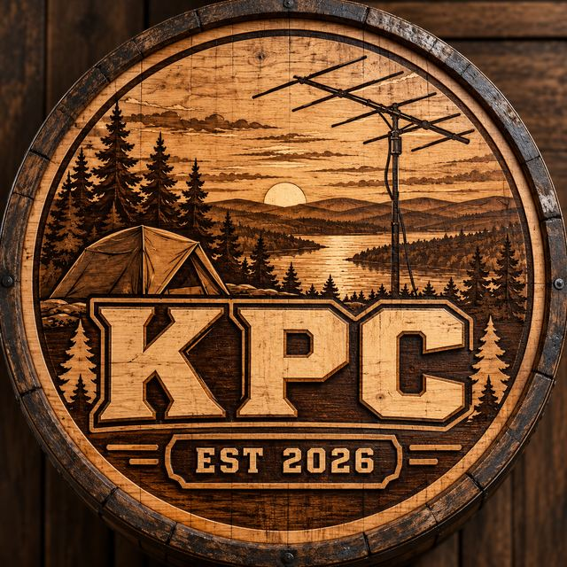

KPC PARK TRACKER
PARK TRACKER
Every POTA park you have activated, in any state, Canadian province or country, on a map, and the ones still to go. Load the file from POTA's My Stats page; in Kentucky your call sign is enough.

1. Load your POTA file
- Go to pota.app and sign in.
- Open My Stats, find your activated parks list and tap ⬇ EXPORT CSV. You get a file called activator_parks.csv (it lands in your Downloads).
- Tap PICK MY POTA FILE below and choose that file. An ADIF activator log from your logging program works too.
- Do it again every month or so, so new activations show up. The page reminds you.
Kentucky only, no file needed:
Activated by youNot yet by youNever activated by anyone
Your file stays on this phone or computer: nothing is uploaded. Park lists for every state, Canada and 64 other countries come from POTA and are refreshed every night. In Kentucky, a park counts as activated with 10 or more contacts in one activation (POTA's rule).